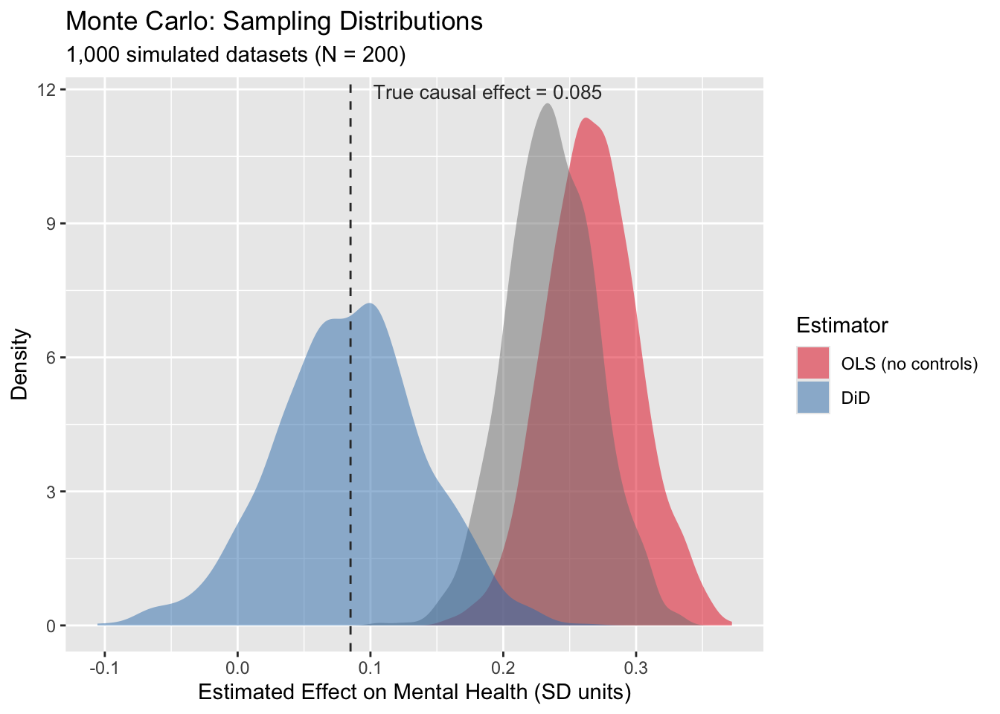
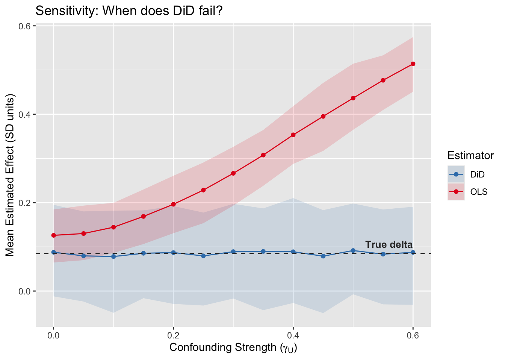

This portfolio continues our simulations and study of the effects of social media on mental health. In portfolio 6, we simulated a 2x2 DiD and compared estimates to an OLS regression. We also plotted an example with 6 time periods. Portfolio 7 dug a little deeper into the 6 time period example by doing an event study to check for the parallel trends assumption. The current portfolio will conduct some robustness checks with a Monte Carlo Simulation and sensitivity analyses!
library(ggplot2)
library(tidyverse)
library(broom)
COL_BIAS <- "#E41A1C" # red — biased / confounded
COL_DID <- "#377EB8" # blue — DiD / identified
COL_DIMMED <- "#BBBBBB" # gray — dimmed paths
COL_TRUE <- "#333333" # dark gray — true effect line
simulate_did <- function(N = 200, delta = 0.085, gamma_u = 0.30,
gamma_w = 0.15, time_trend = 0.05, seed = NULL) {
if (!is.null(seed)) set.seed(seed)
n_treat <- N / 2
n_ctrl <- N / 2
U <- rnorm(N)
W <- rnorm(N)
Treat <- rep(c(1, 0), each = n_treat)
periods <- 1:6
treat_time <- 4
df <- expand.grid(college = 1:N, period = periods) %>%
mutate(
U = U[college],
W = W[college],
Treat = Treat[college],
Post = as.integer(period >= treat_time),
D = Treat * Post
)
df <- df %>%
mutate(
e_sm = rnorm(n(), 0, 0.5),
e_mh = rnorm(n(), 0, 0.5),
SM = gamma_w * W + gamma_u * U + D + e_sm,
MH = delta * SM + gamma_u * U + gamma_w * W + time_trend * (period - 1) + e_mh
)
return(df)
}set.seed(471)
n_sims <- 1000 # simulate 1000 studies
# empty data frame to store results (blank placeholders)
results <- data.frame(
sim = 1:n_sims,
ols_naive = NA_real_,
ols_adj = NA_real_,
did = NA_real_
)Now we can define our Monte Carlo loop. As defined in the previous code, we’re going to run this 1,000 times (i.e., simulate 1,000 studies).
for (i in 1:n_sims) {
df_i <- simulate_did(N = 200) # first, generate sample of 200 colleges
df_post_i <- df_i %>% filter(Post == 1) # for OLS, we only use post-rollout period
# Then, we run the models and take out the coefficients, saving it to row i.
results$ols_naive[i] <- coef(lm(MH ~ SM, data = df_post_i))["SM"] # Model 1: Treat vs. Control (naive OLS)
results$ols_adj[i] <- coef(lm(MH ~ SM + W, data = df_post_i))["SM"] # Model 2: Treat vs. Control with covariate W
results$did[i] <- coef(lm(MH ~ Treat * Post, data = df_i))["Treat:Post"] # Model 3: Diff-in-diff
}Now, below are the means and standard deviations across our 1,000 studies. Keep in mind that our true causal effect (delta) is 0.085!
# Naive OLS
mean(results$ols_naive)## [1] 0.2667071sd(results$ols_naive)## [1] 0.03436421# Adjusted for W OLS
mean(results$ols_adj)## [1] 0.2361645sd(results$ols_adj)## [1] 0.03344954# DiD
mean(results$did)## [1] 0.08356503sd(results$did)## [1] 0.05543945The diff-in-diff estimate was 0.0852. The other two OLS estimates overestimated the effects of social media, by a lot! This was similar to what we saw in portfolio 6. Now, let’s do the cool part and look at the sampling distributions!
# First pivot to long format for ggplot
results_long <- results %>%
pivot_longer(cols = c(ols_naive, ols_adj, did),
names_to = "estimator", values_to = "estimate") %>%
mutate(estimator = factor(estimator,
levels = c("ols_naive", "ols_adj", "did"),
labels = c("OLS (no controls)", "OLS (with W)", "DiD")))
fig_mc <- ggplot(results_long, aes(x = estimate, fill = estimator)) +
geom_density(alpha = 0.5, color = NA) +
geom_vline(xintercept = 0.085, linetype = "dashed", color = COL_TRUE) +
annotate("text", x = 0.085, y = Inf, label = "True causal effect = 0.085",
vjust = 1.5, hjust = -0.1, size = 3.5, color = COL_TRUE) +
scale_fill_manual(values = c("OLS (no controls)" = COL_BIAS,
"OLS (with measured confounder)" = "#FF9999",
"DiD" = COL_DID)) +
labs(title = "Monte Carlo: Sampling Distributions",
subtitle = "1,000 simulated datasets (N = 200)",
x = "Estimated Effect on Mental Health (SD units)",
y = "Density",
fill = "Estimator")
fig_mc
Interestingly, the OLS simulations have less variance. I’m not quite sure why. It might have to do with how it’s only using 3 periods of data, while DiD in this example uses 6?
Another way to look at the differences between results from OLS and DiD is through a sensitivity analysis. Here, we’ll be changing the influence of the unobserved confounders.
# gamma_grid is like a volume dial for our confounder (gamma is the Greek letter that causal geeks use for covariates/confounders). We can set it to range from 0 (unconfoundness) to 0.60 (huge confounding).
gamma_grid <- seq(0, 0.6, by = 0.05)
# We'll be running 200 studies per dial setting
n_sims_sens <- 200
sens_results <- data.frame()
# Here's a nested loop, with the outer loop turning the gamma dial.
set.seed(471)
for (g in gamma_grid) {
# The inner loop 'i' runs 200 studies at that specific volume setting.
for (i in 1:n_sims_sens) {
df_i <- simulate_did(N = 200, gamma_u = g)
df_post_i <- df_i %>% filter(Post == 1)
ols_est <- coef(lm(MH ~ SM, data = df_post_i))["SM"]
did_est <- coef(lm(MH ~ Treat * Post, data = df_i))["Treat:Post"]
# bind each new result to the bottom of the dataset as the loop runs.
sens_results <- rbind(sens_results,
data.frame(gamma_u = g, estimator = "OLS", estimate = ols_est),
data.frame(gamma_u = g, estimator = "DiD", estimate = did_est))
}
}
# Then, group by dial setting and calculate 1) average estimate 2) 95% conf interval
sens_summary <- sens_results %>%
group_by(gamma_u, estimator) %>%
summarize(
mean_est = mean(estimate),
lo = quantile(estimate, 0.025),
hi = quantile(estimate, 0.975),
.groups = "drop"
)
# Lastly, plot sensitivity lines
fig_sens <- ggplot(sens_summary, aes(x = gamma_u, y = mean_est, color = estimator, fill = estimator)) +
geom_ribbon(aes(ymin = lo, ymax = hi), alpha = 0.15, color = NA) + # shaded CI
geom_line() +
geom_point() +
geom_hline(yintercept = 0.085, linetype = "dashed", color = COL_TRUE) +
annotate("text", x = 0.6, y = 0.085, label = "True delta",
vjust = -0.8, hjust = 1, size = 3.5, color = COL_TRUE, fontface = "bold") +
scale_color_manual(values = c("OLS" = COL_BIAS, "DiD" = COL_DID)) +
scale_fill_manual(values = c("OLS" = COL_BIAS, "DiD" = COL_DID)) +
labs(title = "Sensitivity: When does DiD fail?",
x = expression(paste("Confounding Strength (", gamma[U], ")")),
y = "Mean Estimated Effect (SD units)",
color = "Estimator", fill = "Estimator")
fig_sens
When does DiD fail? Never! Well… at least for this pedagogical point, the DiD estimate is not affected by stable unmeasured confounders. It’s immune to permanent (unmeasured) traits. OLS on the other hand, since it’s not design-based inference (but rather model-based inference), the accuracy of the estimated causal effect depends on how much unmeasured confouding exists.